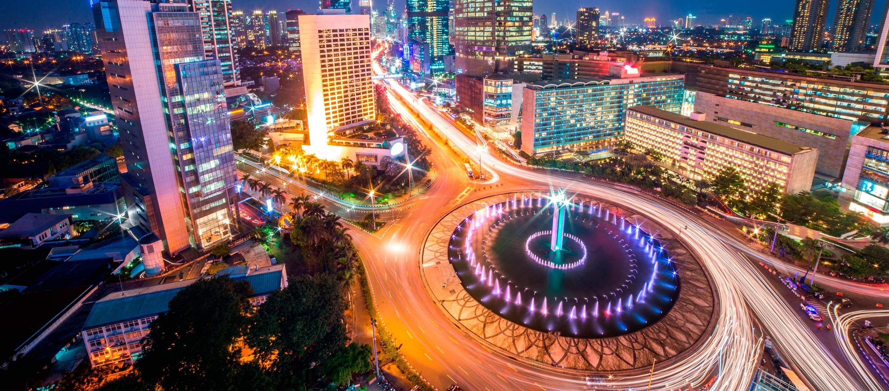
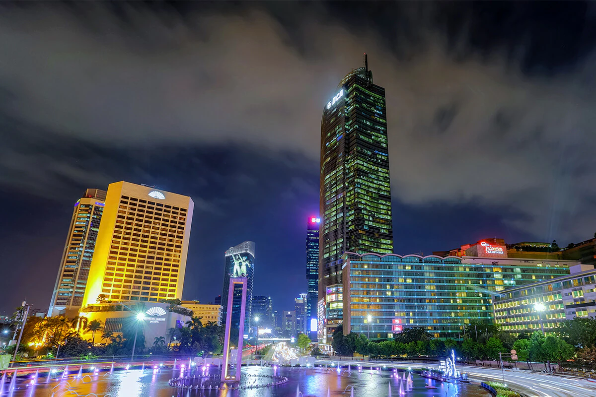
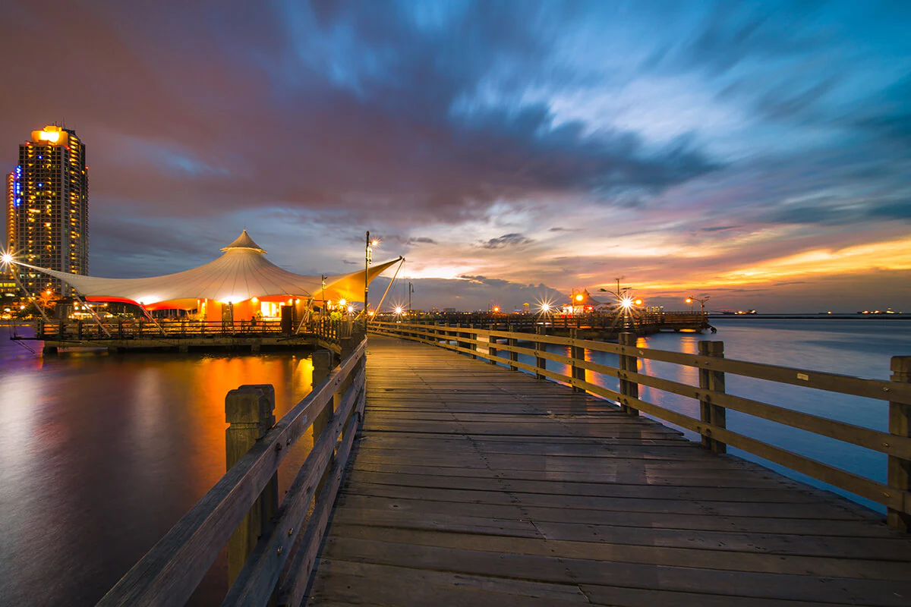
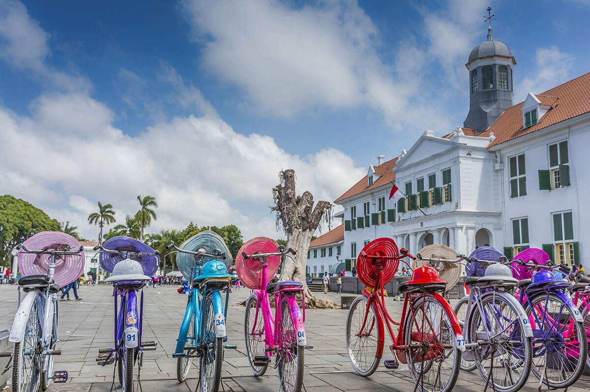

Jakarta
A City that Never Sleeps
Jakarta is the capital city of the Republic of Indonesia. Jakarta is a huge, sprawling
metropolis, home to over 10 million people with diverse ethnic group backgrounds from
all over Indonesia. During the day, the number increases with commuters making their
way to work in the city and flock out again in the evenings.
Located on the northwest of Java Island, the province of DKI Jakarta has rapidly expanded
through the years, absorbing many villages in the process. In fact, Jakarta is a
conglomeration of villages known as kampung, now crossed by main roads and superhighways.

The Charm of the Metropolis
A part of the local experience is that you may drive down one wide avenue one minute, then suddenly
find yourself squeezed into a small street together with scores of cars and motorbikes. With
its many suburbs, Jakarta has become a Megapolitan city. Therefore, when you visit Jakarta
it is best to invest in a good map or rely on GPS to navigate around.
Jakarta is not only the seat of the national government and the provincial government, but it
is also Indonesia’s political center. Moreover, Jakarta is the hub of Indonesia’s national
finance and trade. It is no wonder, that you will find Jakarta as a dynamic city, with
activities taking place around-the-clock throughout its populated areas.
This city is divided into 5 districts, namely Jakarta Pusat, Jakarta Utara, Jakarta Barat,
Jakarta Timur, and Jakarta Selatan. The term ‘Jabodetabek’ refers to Jakarta-Bogor-Depok-
Tangerang-Bekasi - the Greater Jakarta area consists of megacities surrounding the capital.

Get Around
Jakarta Pusat or central Jakarta is where you can find the iconic landmarks such as Monas, The Merdeka
Palace, The National Museum, Istiqlal Mosque, The Jakarta Cathedral, and Monumen Selamat
Datang or the welcome monument widely renowned as Bunderan HI.
Some of the most prestigious shopping malls and upscale hotels are located right in the heart of
Central Jakarta. Here you can enjoy the 24 hours excitements of Jakarta!
Jakarta Utara or North Jakarta is where Taman Impian Jaya Ancol or Ancol Dreamland is located.
It boasts a variety of amusements such as Dufan Theme park, Seaworld, Atlantis Water
Adventure Park, Ecopark, an Art market and comfortable accommodation choices with a
complete culinary destination.
From Ancol Bay, you can hop on a boat and head to Jakarta’s pristine getaway, enriched with
tropical islands named Kepulauan Seribu, or The Seribu Archipelago and sometimes also
simply famous as The Thousand Islands.
Here, there are more than 10 islands that one can explore. Some of the most famous are Bidadari,
Tidung, Pari and Pulau Macan, the home of private beach huts that lets you plunge directly
from your bed to the open sea.
Jakarta Barat or West Jakarta, Jakarta Timur or East Jakarta and Jakarta Selatan or South Jakarta
are those areas where a cluster of houses are located alongside offices, public facilities
and more choices of shopping malls!
The amazing historical heritage in West Jakarta is Museum Fatahillah and its surrounding Kota Tua
or Old Jakarta district is where you can ride a classic bike to tour the area. The new iconic
destination in West Jakarta is the contemporary art exhibition venue named Museum Macan,
where Yayoi Kusama’s artworks are displayed.
In East Jakarta, you can visit Taman Mini Indonesia Indah, the miniature of Indonesia Archipelago.
You can explore the details of traditional houses and a glimpse of Indonesia’s diverse culture
in this park.
When visiting South Jakarta, make sure to drop by at Setu Babakan and get to know the story of
Betawi culture, the native ethnic group of Jakarta. There are a museum and traditional Betawi
houses with few activities that you can experience, such as getting to know the traditional
dance and music, tasting the local beverage of Bir Pletok, have a bite of Kerak Telor and
making small ondel ondel, the iconic figure of Jakarta!
All parts of Jakarta are studded with their own culinary icons and trending coffee shops to spend
the day at. Here, you can easily find the five national foods, namely Nasi Goreng, Gado-gado,
Soto, Sate, and Rendang.

Indonesia’s Independence Day is also celebrated annually on the 17th of August with various
activities throughout the nation. Especially in Jakarta, you will find communities decorating
their homes with the national color of red and white.
Unique games and races are packed with participants of all ages. Balap Karung or the sack
race and Panjat Pinang or the Pinang climb are two iconic games that are always crowded
with spectators.
Get There
By Air
Jakarta has two international airports, one is the larger Soekarno-Hatta International Airport, located in Tangerang, now in the neighboring province of Banten. The other is the smaller Halim Perdanakusuma Airport, which is reserved for limited domestic flights.
Overland
As the nation’s capital, Jakarta is connected by land to major cities in Java, public
transport to get to Jakarta is available by bus and train.
People who visit Jakarta, usually take time to stop by the neighboring Bogor, famous
for it's Botanical Garden and highlands getaway in the Puncak area.
Or if you prefer the coastal area, head to Banten and spend a holiday at Anyer and Carita Beach.
By Sea
Tanjung Priok is the name of Jakarta’s seaport, located in North Jakarta. It is the busiest
seaport in Indonesia.
In April 2018, Genting Dream Cruises, based in Singapore, has opened special itineraries
to visit Indonesia’s capital for this summer to voyage. A delightful choice for the
one who wants to splurge aboard a luxurious cruise ship.
Get Around
The best way to travel around Jakarta is by rented car, taxi or package tour. Be
prepared though to meet traffic jams, especially when traveling during peak hours
and into business districts, including the Old Batavia area.
It is advisable therefore to choose a hotel near the location where you will have
your meeting or business appointments or to the attraction or destination you wish
to visit. Distances between points of interest in Jakarta can sometimes be far and
might be interspersed with traffic.